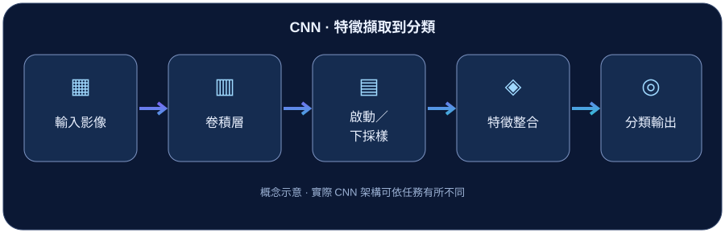

01 · 技術介紹
卷積神經網路（Convolutional Neural Network, CNN）是一類特別適合處理網格狀資料（例如影像）的神經網路。它不是直接把每個像素當成彼此無關的數字，而是利用鄰近像素通常具有關聯的特性來學習局部模式。
在影像分類任務中，CNN 從輸入圖片中提取特徵，最後輸出類別分數；在偵測、分割等任務中，也能作為重要的特徵擷取模組。
02 · 核心概念
可以把 CNN 想成拿著一個小放大鏡掃過照片：先觀察小範圍的線條與形狀，再把各處的觀察結果組合起來。
- 卷積核（Kernel）：一組可學習的權重，用來辨識局部模式。
- 特徵圖（Feature Map）：卷積運算之後形成的特徵表示。
- 權重共享：同一個卷積核在不同位置重複使用，減少需要學習的參數。
03 · 技術原理
卷積、啟動與下採樣
卷積層將卷積核滑過輸入，計算局部加權組合；後續常搭配 ReLU 等非線性函數。池化（Pooling）或帶步長的卷積可以縮小特徵圖的空間尺寸，讓後續層整合更廣範圍的資訊。
對輸入尺寸與輸出尺寸而言，Kernel Size、Stride、Padding 是常見設定。實際架構不一定包含池化或全連接層，以下是典型分類流程的簡化示意。
關鍵想法：前層偏向局部特徵，較深層可結合更複雜的模式；但每一層實際學到什麼，仍取決於資料與訓練。
04 · 運作流程
以一個基本影像分類 CNN 為例：

- 輸入影像：將圖片以張量形式送進模型。
- 局部特徵擷取：卷積核滑過影像，產生特徵圖。
- 逐層整合：透過非線性變換、下採樣及更多卷積層建立高階特徵。
- 任務輸出：分類模型將特徵轉換為各類別分數。
05 · 實際應用
- 影像分類：辨識圖片中的物體或場景。
- 醫學影像：作為器官或病灶分割模型的特徵提取骨幹。
- 品質檢測：協助辨識產品表面瑕疵等局部影像模式。
實際使用時仍須注意訓練資料偏差、影像品質變化與測試環境差異。
06 · 重點整理
- CNN 利用局部連結和權重共享學習影像特徵。
- 卷積核會隨訓練更新，不是只能使用手工設定的濾波器。
- 經過多層處理後，特徵可用於分類、偵測、分割等不同任務。
- 不是每一種 CNN 都必須有池化層或全連接層。
參考資料
下列連結提供進一步查證的官方資料及論文；本文為入門性教學整理，流程圖為本站自繪概念示意。